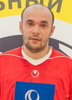

ООО «РБ Страхование Жизни» специализируется на страховании жизни
и представлена под брендом Росбанк Страхование
До 2022 года компания называлась ООО «СОСЬЕТЕ ЖЕНЕРАЛЬ Страхование».
Компания является членом Всероссийского союза страховщиков (ВСС).
Экспертный рейтинг
22.05.2023 г. рейтинговое агентство «Эксперт РА» присвоило рейтинг финансовой надежности
страховой компании на уровне «ruAА» со «стабильным» прогнозом.
29.02.2024 г. рейтинговое агентство АКРА подтвердило кредитный рейтинг страховой компании
на уровне «АА(RU)», прогноз «стабильный».
Виды страховых услуг:
страхование жизни на случай смерти, дожития до определенного возраста или срока либо наступления иного события;
страхование жизни с условием периодических страховых выплат (ренты, аннуитетов)
и (или) с участием страхователя в инвестиционном доходе страховщика;
страхование от несчастных случаев и болезней;
медицинское страхование.
О компании
Руководство

Борис Бальбоа
Генеральный директор ООО «РБ Страхование Жизни»Николай Кардашевский
Генеральный директор ООО «РБ Страхование»История
2007
Компания «СОСЬЕТЕ ЖЕНЕРАЛЬ Страхование» возникла в 2007, когда международная финансовая группа Societe Generale купила СК «Союзник».Страховая организация «Союзник» появилась в 1993 году.
После покупки компании руководство французской финансовой группы решило реорганизовать страховой бизнес в России под названием международного бренда Societe Generale Insurance.
ООО «СОСЬЕТЕ ЖЕНЕРАЛЬ Страхование» является членом Всероссийского союза страховщиков (ВСС), а также Российского Союза Автостраховщиков (РСА).
2014
Основной вид деятельности – страхование заемщиков.В 2014 году на договоры по страхованию финансовых рисков пришлось свыше 67% портфеля.
Головной офис «Сосьете Женераль» расположен в Москве, продажа страховых продуктов ведется через российские отделения одноименного банка.
2019
Росбанк и «Сосьете Женераль» разработали для владельцев банковских карт программу «Дефанс», созданную для защиты от рисков мошенничества, связанных с использованием банковских карт.В декабре страховщик произвел ребрендинг, новое название – «РОСБАНК Страхование».
При этом названия юридических лиц останутся прежними: ООО «СОСЬЕТЕ ЖЕНЕРАЛЬ Страхование» и ООО «СОСЬЕТЕ ЖЕНЕРАЛЬ Страхование Жизни».
2022
В сентябре ООО «СОСЬЕТЕ ЖЕНЕРАЛЬ Страхование» сменило фирменное наименование на ООО «РБ Страхование».Переименование компании не влечет за собой каких-либо изменений: руководство, адреса, обязательства, контактные информация и т.д. – остаются без изменений.
Все договоры страхования, заключенные с ООО «СОСЬЕТЕ ЖЕНЕРАЛЬ Страхование», продолжают действовать согласно их условиям.